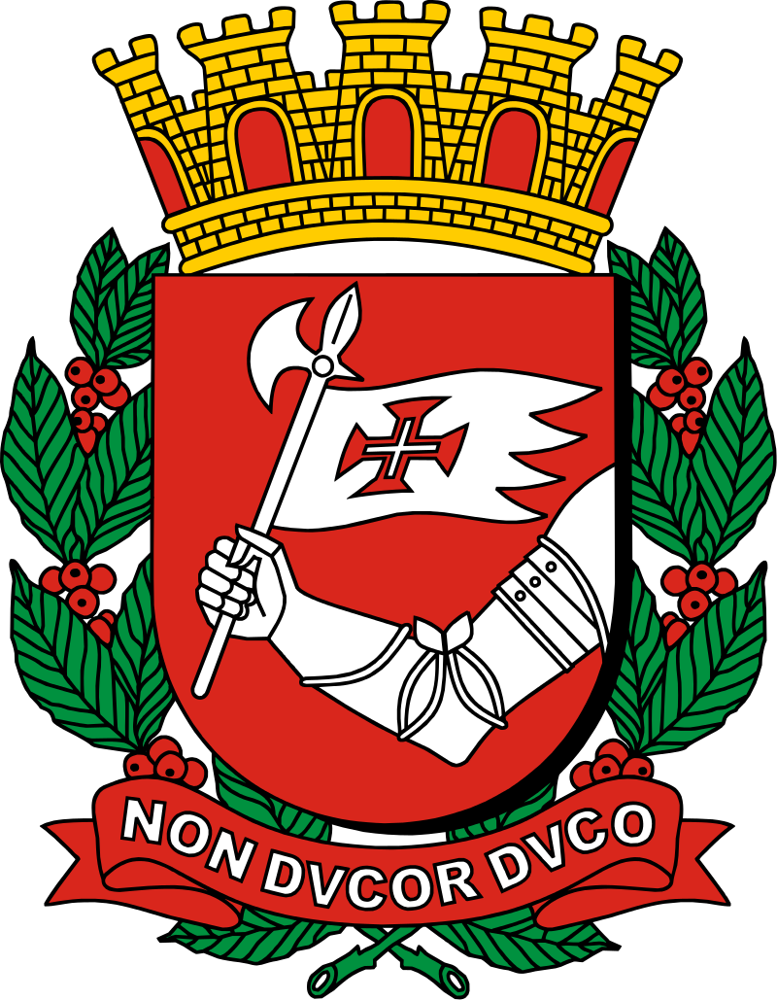

| City | Symbol | Population millions | Football Clubs |
|---|---|---|---|
| São Paulo |  | 12.3 |  Corinthians FC São Paulo FC Palmeiras FC |
| Rio de Janeiro |  |
6.7 | Flamengo FC Fluminense FC 
Club de Regatas Vasco da Gama FC |
| Porto Alegre |  | 1.5 | Grêmio FC Internacional FC |
| Santos | 0.5 | Santos FC Portuguesa Santista FC |
|
| Salvador |  | 2.5 |  Esporte Clube Bahia FC |
| Belo Horizonte |  | 2.7 |
Cruzeiro FC  Atlético Mineiro FC |
| Recife | 1.5 |  Sport Club do Recife |
|
| Curitiba |  | 1.7 | _-_PR.svg.png) Coritiba FC  Athletico Paranaense |
| Chapecó |  | 0.2 |  Associação Chapecoense de Futebol |
| Campinas |  | 1.1 |  Ponte Preta FC |
Brasil